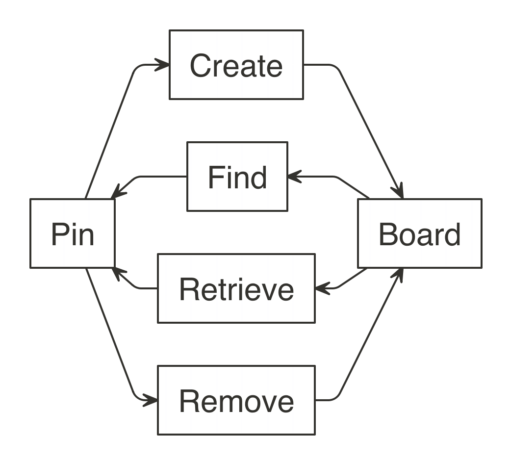

knitr::opts_chunk$set(eval = FALSE)The board extension API is changing at this time
The GitHub, Kaggle, RStudio Connect and Website boards provide access to popular Data Science storage services; however, there can be many other interesting services to store resources through pins. For instance, Amazon S3, Amazon Glacier, Azure Blobs, Google File System and Hadoop, just to name a few. While those are not natively implemented in the pins package, you can create packages that extend pins to support many other services through custom boards.
For the purpose of creating custom boards, it helps to understand a board as a collection of files stored with a given name. It closely resembles a simple file systems, but it only requires the following operations to be implemented: create, get, find and remove. For read-only storage locations, you can also decide to implement only the ‘get’ and ‘find’ operations.

The most important S3 methods that your board needs to support are board_pin_create(), board_pin_get(), board_pin_find() and board_pin_remove() which define how to create, get, find and remove a pin.
The next S3 method to consider implementing is board_initialize() which is optional to implement but provides support for initialization, this method usually deals with authentication.
The last function to consider implementing is board_browse(), this function is used to browse to the location of the board. Usually implemented by calling browseURL() to open to website of the service hosting the custom board.
To make this a bit more clear, the following section implements a custom board based on folders.
The following example creates a simple folder-based board, which stores pins in local folders, this is similar to the default ‘local’ board. It is advisable to create an R package that provides these methods, but you can also define them in a plain R script:
board_initialize.folder <- function(board, ...) {
if (!dir.exists("pins")) dir.create("pins")
board
}
board_pin_create.folder <- function(board, path, name, ...) {
dir.create(file.path("pins", name), recursive = TRUE, showWarnings = FALSE)
file.copy(dir(path, full.names = TRUE), file.path("pins", name), recursive = TRUE)
}
board_pin_get.folder <- function(board, name, ...) {
file.path("pins", name)
}
board_pin_find.folder <- function(board, text, ...) {
data.frame(name = dir("pins", text), stringsAsFactors = F)
}
board_pin_remove.folder <- function(board, name, ...) {
unlink(file.path("pins", name), recursive = TRUE)
}You can optionally support data versions in your board to enable pin_versions() and pin_get("name", version = "version") by extending board_pin_versions:
board_pin_versions.folder <- function(board, name, ...) {
data.frame(
version = 1
)
}
board_pin_get.folder <- function(board, name, version = NULL, ...) {
if (!is.null(version)) message("Version ", version, " requested!")
file.path("pins", name)
}You can then use this folder board like any other board:
library(pins)
board_register("folder")
pin(iris, board = "folder")
pin_get("iris", board = "folder")# A tibble: 150 x 5
Sepal.Length Sepal.Width Petal.Length Petal.Width Species
<dbl> <dbl> <dbl> <dbl> <fct>
1 5.1 3.5 1.4 0.2 setosa
2 4.9 3 1.4 0.2 setosa
3 4.7 3.2 1.3 0.2 setosa
4 4.6 3.1 1.5 0.2 setosa
5 5 3.6 1.4 0.2 setosa
6 5.4 3.9 1.7 0.4 setosa
7 4.6 3.4 1.4 0.3 setosa
8 5 3.4 1.5 0.2 setosa
9 4.4 2.9 1.4 0.2 setosa
10 4.9 3.1 1.5 0.1 setosa
# … with 140 more rowsTo extend pins in a separate package, make sure to export the s3 generics from pins. For example:
#' @importFrom pins board_initialize
#' @export
pins::board_initialize
#' @importFrom pins board_pin_create
#' @export
pins::board_pin_create
#' @importFrom pins board_pin_get
#' @export
pins::board_pin_get
#' @importFrom pins board_pin_find
#' @export
pins::board_pin_find
#' @importFrom pins board_pin_remove
#' @export
pins::board_pin_remove
#' @importFrom pins board_pin_versions
#' @export
pins::board_pin_versions